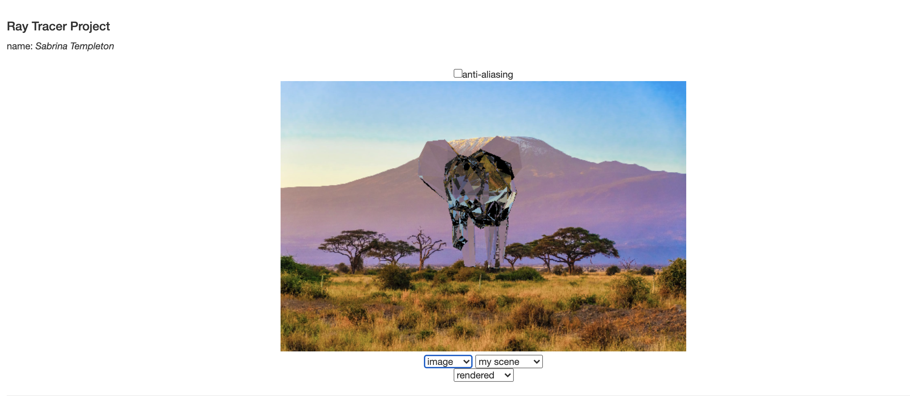

The ray tracer I wrote takes in input as spheres, or later, triangle meshes and draws them in a scene with lights. The intersect function does the main work: for spheres, it uses a quadratic formula to find the closest intersection point within a reasonable range. Some logic around this function allows it to deal with multiple shapes, keeping the closest intersection as the one to calculate color. From there, the color function takes over. The color function calculates color based on material color and uses the Blinn-Phong model to shade this color according to the lights present in the scene. It calculates shadows by sending another way from the last intersection point to the light to check if it is being blocked. Then, if the material is reflective or refractive, ray scattering commences. A scatter function is called which calls either the reflect or refract functions, accordingly. This calculates another ray in a relevant direction to get a color from. This is all done recursively, so if the second ray hits a reflective material, the process will continue until maximum depth is reached or a diffuse material is hit.
To intersect rays with triangles, I started by looking more into the process through the Pixar in a Box videos. This helped me gain a more solid understanding of the steps with which I was able to approach the formulas that were provided. From there, it was a matter of implementing those formulas (solving Ax=b). I created a Mesh class to hold the data the way we have seen it stored in the past, with an array of triangles and an array of vertices. Then I ran through the objects and set up the meshes, converting them into Triangle objects, which had p1, p2, and p3 attributes.
To compute the background color from an image, I loaded the image in on a new html canvas. In researching how to access the pixel colors, I realized I would need pixel indices, and the only current input was a ray object. I decided to create a helper function that could take in the ray and reverse what we had done to convert px and py into a ray direction. Along the way, I discovered that I could not reverse the normalized ray direction, so I saved a pre-normalized ray direction wherever I could. Where I could not easily save this direction, I approximate it. From there, I simply edited the background function to call this function, convert px and py into an index, and use that to find a rough corresponding pixel for a given ray.
For anti-aliasing, I created a loop that has a number of samples to take if we are doing anti-aliasing. The first time the loop runs, it will take the regular sample at the center of the pixel. Any time after that, it takes a sample at a random point within the pixel. It then averages the colors it gets from each sample to make a smoother effect.
Also, I implemented a debugging mode so that the renders are easier on the computer at first draw. It also helps with printing. Turn to rendered mode to see all the images in their full glory!
I had a lot of fun with this project and hope you enjoy the images I've created!
I set each scene as described in the instructions. For checkpoint one, there is a simple red sphere.
For checkpoint two, there are a few spheres to show that the raytracer can correctly trace from the closest sphere at any given point.
For checkpoint three, there are a few shaded spheres with shadows calculated from shadow rays and shaded with the blinn-phong shading model.
In checkpoint four, the red and gray spheres also have reflective materials and the relfections are calculated from ray scattering.
In checkpoint five, I set up my own scene and added a 'glass' sphere. Screenshots show it with and without the ground to show its refractions.
Then, I was able to start implementing extensions, which was incredibly fun! I added a background that works with translucent materials.
I implemented an anti-aliasing feature.
My personal favorite, the ability to render triangle meshes. This one allowed me to make this awesome scene with a giant crystal baby elephant in front of Mt. Kilimanjaro. (I love baby elephants.) Partly inspired by my Professor's giraffe art! I made the mesh myself in Blender and then copied the vertex and triangle data from a python script. :)
Here's a bigger version of the elephant because he's my favorite.